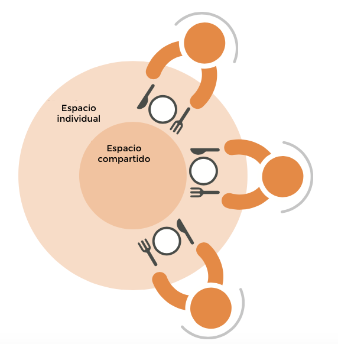

El objetivo de este proyecto es integrar a las personas hipo videntes, no videntes y normovidentes en la mesa. Esta integración se logra a partir de la reflexión sobre el uso de los sentidos y como las personas con menor o nula visión los utilizan en relación al espacio y a los alimentos. Se ha comenzado la investigación a partir del contexto social para luego profundizar en como estos usuarios desarrollan las actividades en la cocina, desde la preparación de los alimentos hasta su consumo, es en este último momento donde se enmarca el proyecto. La respuesta inclusiva se concreta en un set de degustación: Bloom, el cual transforma el comer en una experiencia multisensorial.
¿Por qué proyectar para todos?
No existe la persona promedio, es por ello que se diseña mejor si se consideran los extremos, a la vez que abren las oportunidades a nuevos desarrollos. El proyecto comenzó con la hipótesis que las personas con déficit visual tenían mayor dificultad en las tareas ligadas a la cocina. Para corroborar se visitó la UICI de Turín (Unión Italiana de Ciegos e hipovidentes) conociendo el trabajo que realizan en materia de rehabilitación, comunicación y educación, además se realizaron entrevistas con personas ciegas y con distintos niveles de baja visión, algunas que habían perdido la visión siendo adultas y otras que nacieron siendo no videntes. Luego de estos encuentros sale a luz que aquello que más le afectaba no eran las tareas de cocina, las cuales podían aprender sin grandes dificultades, sino el dolor que emergía es aquel de la falta de integración, constantemente luchan para que no se les mire distinto y puedan desarrollarse como cualquier otra persona. Es en esta circunstancia en la cual la hipótesis cambia y surge la pregunta ¿Cómo integrar a las personas en un ambiente festivo entorno a una mesa? Es a partir de esa pregunta que buscamos que es aquello que las personas con deficit visual saben y los normovidentes hemos olvidado. Y la respuesta fue el uso de los sentidos, mientras los normovidentes usan el sentido de la vista para obtener el 80% de la información de su entorno, los hipovidentes deben agudizar los otros sentidos.
Los sentidos y el alimento
El uso de los sentidos al momento de comer se vuelve relevante, porque permite obtener una experiencia enriquecedora y memorable, la degustación no es producto de un único sentido. El sabor, llamado de norma “Flavour” se crea con el conjunto de sensaciones producidas por el alimento, principalmente con el sentido del gusto y del olfato, sin embargo los otros sentidos también son participes, el tacto permite percibir las texturas y temperatura, la vista las formas y colores, el oído la consistentencia y el tipo de preparación
Gestos del consumo
Se estudió como las personas con déficit visito utilizan sus otros sentidos para obtener información, considerando los utensilios, sus gestos en la mesa, el espacio y los movimientos. Se considera un almuerzo completo italiano.
Consumo individual y porciones
Espacios en la mesa
Momentos del consumo
Bloom: set de degustación
Tomando nota de estudios de psicología aplicada, se encuentran las distintas texturas que coinciden con los sabores, las formas y materiales adecuados.